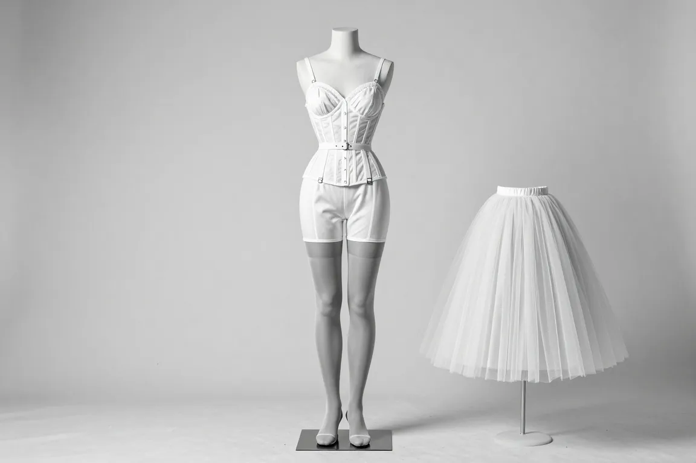

fashion · 1947–1962 · also: Bullet bra and girdle, Waist cincher, Post-war foundations
The structured underwear of the New Look years: circle-stitched cups, a waist cincher, an elastic girdle and a suspender belt. They were knitted or woven in nylon, satin and rubber-core elastic.

Core thesis
The post-war dress needs a built body under it, and nylon and elastic make that build light, washable and soft to wear.
Design principles
Cut each cup as a cone, and stitch it in circles from the tip, so that the point holds its shape.
Narrow the waist by 5 to 8 cm with a waist cincher or a long-line bra with boning.
Knit the body in nylon tricot, so that it dries fast after washing.
Set a panel of elastic in the girdle, and fit four suspenders to the lower edge.
Fasten the bra with three hooks at the back and the girdle with a side zip.
Trim the cups with a nylon lace and a small satin bow.
Match the foundation to the dress: a strapless basque for a full skirt, a girdle for a narrow skirt.